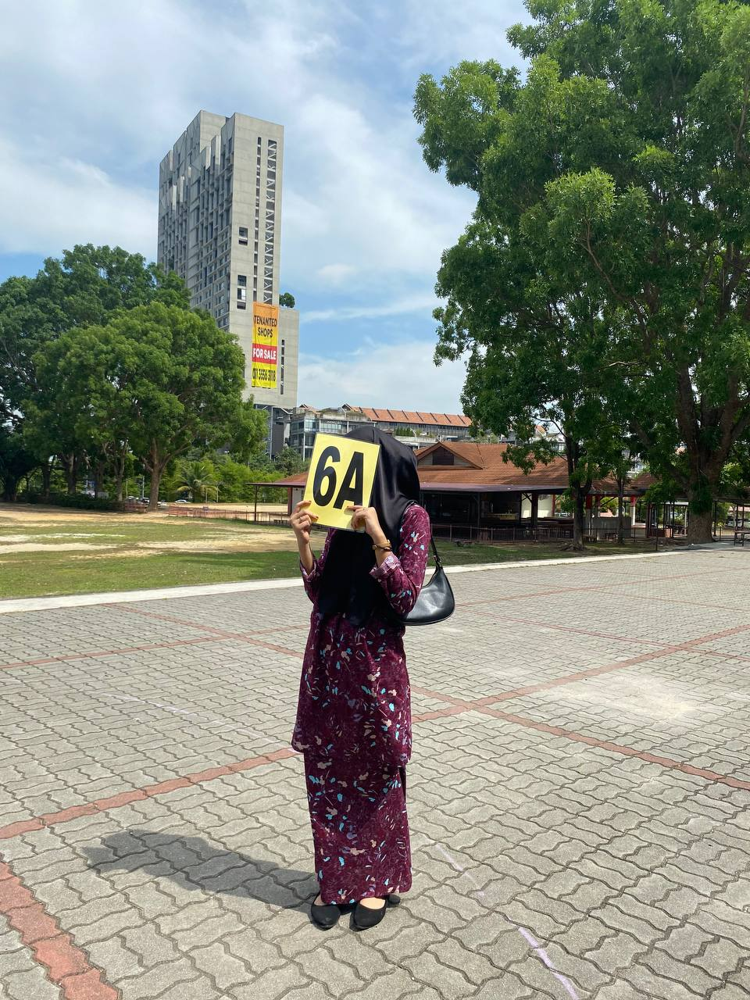

My Journey Education
Explore my academic path, achievements, and experiences that have shaped my growth.
Achievements and Experiences
SPM Results
I achieved 6 A’s and 2 B’s in the Sijil Pelajaran Malaysia (SPM), a milestone that strengthened my confidence and fueled my passion for learning. This achievement remains one of my proudest accomplishments, highlighting my dedication, discipline, and perseverance. It continues to inspire me to embrace new challenges and strive for excellence in higher education and beyond.
“Believe in yourself and all that you are. Know that there is something inside you that is greater than any obstacle.” – Christian D. Larson
UiTM Achievements

I have consistently earned the Dean’s List Award from Semester 1 through Semester 4 while pursuing my Diploma in Information Management at Universiti Teknologi MARA (UiTM). This consistent recognition of my academic achievements has fueled my motivation to maintain high standards, embrace challenges, and strive for excellence in all my endeavors.
“Strive not to be a success, but rather to be of value.” – Albert Einstein
Future Goals

“I aspire to continuously develop my experience, skills, and leadership, enabling me to achieve personal and professional success in the future.”
Work Experiences

My experience as an intern at the Syariah Court of Putrajaya was both fascinating and unforgettable. It was an invaluable experience that gave me the opportunity to learn about court administration, understand official procedures, and enhance my professional and communication skills.
“Professional growth comes from stepping out of your comfort zone and embracing new challenges.” – Anonymous